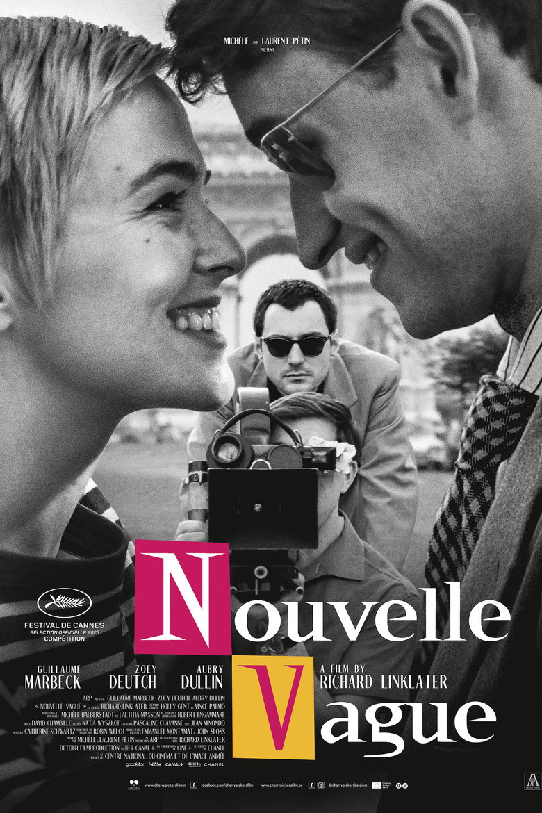

Fiche technique

Synopsis
Paris, 1959. Jean-Luc Godard, critique aux Cahiers du cinéma, 28 ans, lunettes noires et aphorismes en bandoulière, enrage : tous ses amis — Truffaut, Chabrol, Rivette — sont passés à la réalisation, et lui pas. Avec un synopsis de quatre pages arraché à Truffaut, la promesse d'une star américaine (Jean Seberg, échaudée par ses débuts chez Preminger) et l'argent du producteur Georges de Beauregard, il se lance : vingt jours de tournage sans autorisation, sans son direct, presque sans scénario[1][2].
Le film suit ce tournage jour après jour — Coutard caché dans une charrette des postiers, Belmondo qui doute, Seberg qui menace de partir, Godard qui annule des journées entières parce qu'il n'a « rien à tourner » — jusqu'à la naissance, dans le chaos, du film qui va rendre toutes les règles négociables : À bout de souffle[1][2].
Contexte de production
Projet de cœur d'un cinéphile absolu — Linklater a fondé l'Austin Film Society et cite la Nouvelle Vague comme son acte de naissance artistique —, le film est son premier entièrement tourné en français, à Paris, au printemps 2024. Le pari formel est radical : reconstituer 1959 dans les textures mêmes de 1959 — noir et blanc 35 mm signé David Chambille, format académique 1.37:1, et jusqu'au grain, aux rayures et aux instabilités de fenêtre ajoutés en postproduction pour donner à l'image une qualité d'archive[1].
Le casting refuse les vedettes pour les rôles français : Guillaume Marbeck (Godard) et Aubry Dullin (Belmondo) sont des quasi-inconnus choisis pour leur ressemblance et leur justesse, entourés de toute la galaxie d'époque — Truffaut, Chabrol, Melville, Rossellini, Varda, Demy, la scripte Suzanne Schiffman, le chef opérateur Raoul Coutard — présentés par sous-titres comme dans un album de famille[1][3]. Seule star : Zoey Deutch en Jean Seberg, américaine chez les Français comme son modèle. Linklater s'est appuyé sur les photos de plateau et le journal de production du film original pour rejouer le tournage à la lettre[2].
Structure narrative
La construction épouse le plan de travail : une mise en place (le Paris des Cahiers, les frustrations de Godard, la négociation avec Beauregard) puis le tournage comme feuilleton — chaque journée devenant une saynète avec son obstacle, son trait d'esprit et sa trouvaille. Pas de dramaturgie du chef-d'œuvre annoncé : le film cultive au contraire l'incertitude joyeuse d'une équipe qui ne sait pas qu'elle fait l'Histoire, et dont la moitié pense que « ce truc » sera invisible[2][3].
Linklater — cinéaste du temps s'il en est, de Boyhood à la trilogie Before — filme moins un biopic qu'une durée : trois semaines d'été 1959, closes sur la vision du film fini et le vertige de Seberg découvrant qu'elle est, pour toujours, la fille du boulevard qui crie le New York Herald Tribune. La boucle est cinéphile jusqu'au bout : le récit s'achève où commence le mythe.
Mise en scène et procédés techniques
Le geste le plus commenté du film est son mimétisme : Linklater tourne « à la manière de » — caméra légère, lumière naturelle, raccords vifs — sans jamais singer les jump cuts d'À bout de souffle lui-même : son film à lui est classiquement découpé, comme pour rappeler que la liberté de Godard fut un événement, pas un style à recopier. La critique française a noté la « reconstitution documentée et didactique », ses protagonistes présentés par intertitres, et ce « ton léger qui donne de faux airs de Woody Allen movie », sans parodie ni hagiographie[3].
Le travail de texture est d'une minutie d'orfèvre — grain argentique, poussières, respiration de la fenêtre de projection ajoutés numériquement[1] — et la direction d'acteurs vise l'incarnation plutôt que l'imitation : Marbeck ne cite pas Godard, il en restitue le débit, les silences buttés, la cruauté timide. Quant aux reconstitutions de plans célèbres (la charrette des postiers en travelling clandestin, les Champs-Élysées au petit matin), elles fonctionnent comme des vignettes de vérification : on voit littéralement d'où venaient les images qu'on connaît par cœur[2][3].
Personnages principaux
Godard (Guillaume Marbeck, révélation) est filmé sans dévotion : génial et insupportable, bluffeur, emprunteur, capable de renvoyer son équipe faute d'inspiration puis de trouver en dix minutes ce que personne n'avait osé. Le film tient la ligne de crête : ni le monstre sacré rétrospectif, ni le saint patron des cinéphiles — un jeune homme pressé qui invente sa liberté en marchant[2].
Jean Seberg (Zoey Deutch) est le contrepoint émouvant : star déjà brûlée par Hollywood à 20 ans, elle débarque en terrain inconnu, entre agacement professionnel (ce tournage sans script ni son la déroute) et intuition que quelque chose se joue. Belmondo (Aubry Dullin) apporte la grâce physique et l'humilité du débutant — « ça ne sortira jamais » — tandis que la constellation d'époque (Truffaut en aîné bienveillant, Melville en oracle, Coutard en complice technique, Suzanne Schiffman en cheville ouvrière) compose autour d'eux le portrait de groupe d'une génération[1][3].
Thèmes
Le thème central est la naissance de la liberté artistique — non comme illumination mais comme bricolage : pas d'autorisations, pas de son direct, pas d'argent, et chaque manque converti en style. Le film est une leçon de cinéma déguisée en chronique : ce que le monde a pris pour une révolution esthétique fut d'abord une suite de solutions à des problèmes de production.
Vient ensuite la cinéphilie comme religion joyeuse — les Cahiers, les citations, les duels de références — que Linklater filme avec la tendresse de l'ancien converti, tout en en montrant la part de pose et de rivalité. Enfin, le film médite sur la transmission : tourné par un Américain de 64 ans sur des Français de 25, il raconte comment un geste local devient patrimoine mondial — au risque, que la critique n'a pas manqué de pointer, de « muséifier » ce qui fut sauvage[3]. Le film assume : c'est un reliquaire, mais un reliquaire qui donne envie de sortir filmer — ce qui est, après tout, l'exact effet que produisait l'original.
Réception critique et postérité
Onze minutes d'ovation à Cannes le 17 mai 2025, en compétition ; puis une bataille d'enchères remportée par Netflix pour les droits américains (4 millions de dollars — le deuxième montant jamais payé pour un film en langue étrangère)[1]. L'accueil critique est chaleureux — 92 % sur Rotten Tomatoes, 76 sur Metacritic, « un hommage nostalgique à un moment de ferment créatif extraordinaire »[1] — avec une réserve récurrente côté français, résumée par avoir-alire : « plaisant, nostalgique et soigné » mais « mineur », d'une approche « fétichiste »[3].
La consécration vient de France, et elle est historique : aux César 2026, Richard Linklater remporte la meilleure réalisation — deuxième cinéaste américain seulement à recevoir ce prix[1]. L'ironie n'a échappé à personne : le pays qui avait inventé la politique des auteurs décore un Texan pour avoir filmé la naissance de son propre mythe. Godard, mort en 2022, n'aura pas vu le film — les exégètes se disputent encore sur ce qu'il en aurait dit, ce qui est sans doute l'hommage le plus godardien possible.
Conclusion
Nouvelle Vague est un objet impossible réussi : un film académique — au sens propre, jusqu'au format 1.37 — sur le geste le plus anti-académique du cinéma. Ce paradoxe, que ses détracteurs appellent muséification et ses admirateurs tendresse, est en réalité son sujet : Linklater ne prétend pas refaire À bout de souffle, il filme la distance qui nous en sépare — soixante-cinq ans de cinéphilie, de commentaires et d'amour, à travers lesquels le tournage de 1959 nous parvient comme une lumière d'étoile.
Reste le plus précieux : la contagion. On sort du film avec l'envie de voir ou revoir l'original, de lire les Cahiers, de tourner quelque chose avec rien — et c'est exactement ce qui distingue l'embaumement de la transmission. Le César de Linklater dit peut-être cela : la Nouvelle Vague appartient désormais à quiconque en fait quelque chose. Même un Texan. Surtout un Texan.
Sources
- Wikipédia (en) — « Nouvelle Vague (2025 film) » : production (scénario Gent/Palmo, adaptation Halberstadt/Masson, tournage Paris 2024, budget, textures d'archive ajoutées), Cannes (ovation de 11 minutes), accord Netflix, sorties, réception chiffrée, César 2026 de la meilleure réalisation. en.wikipedia.org
- Festival de Cannes — « Nouvelle Vague, a cinephile's declaration of love by Richard Linklater » et presse de festival associée (consultées via recherche web) : reconstitution d'après photos de plateau et journal de production, dispositif du tournage de 1959. festival-cannes.com
- avoir-alire (Gérard Crespo) — « Nouvelle vague - Richard Linklater - critique » : dispositif didactique, intertitres, galaxie Nouvelle Vague (Beauregard, Coutard, Gréco, Demy, Varda...), ton « Woody Allen movie », jugement « plaisant... mais mineur », réserve sur la muséification. avoir-alire.com
- The Movie Database (TMDB) — fiche du film (données factuelles, affiche). themoviedb.org/movie/1254808